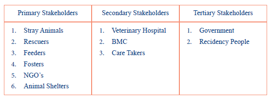
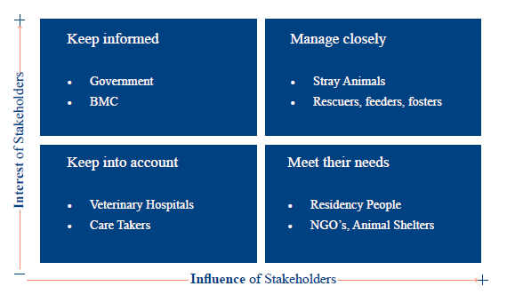
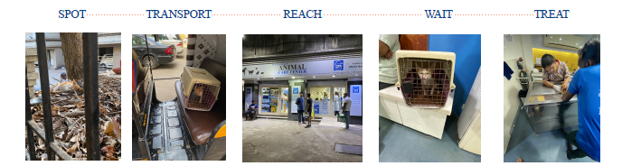
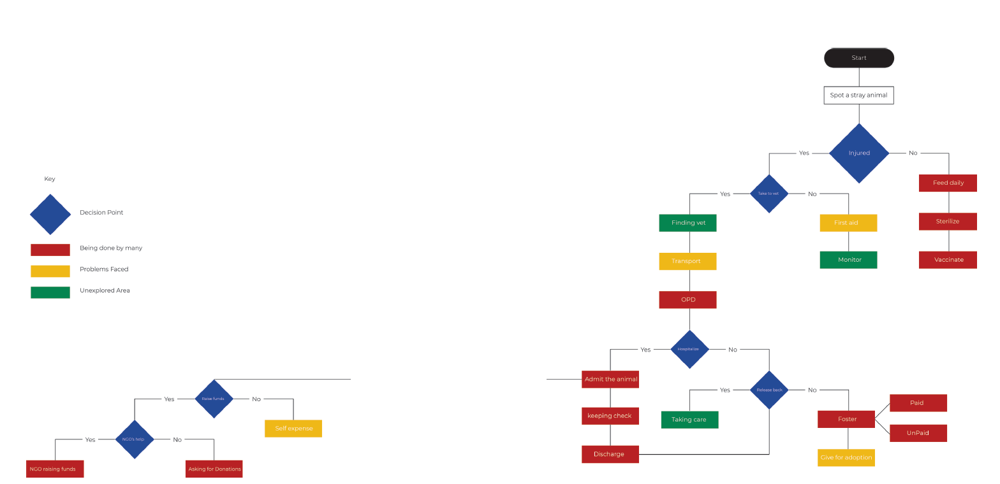
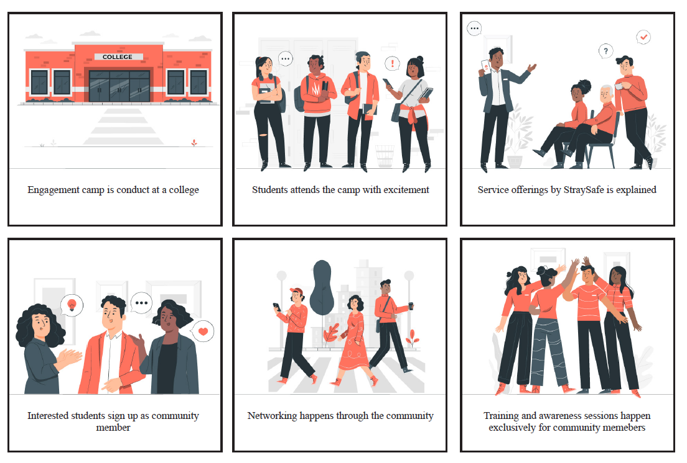
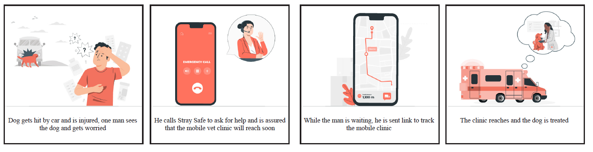
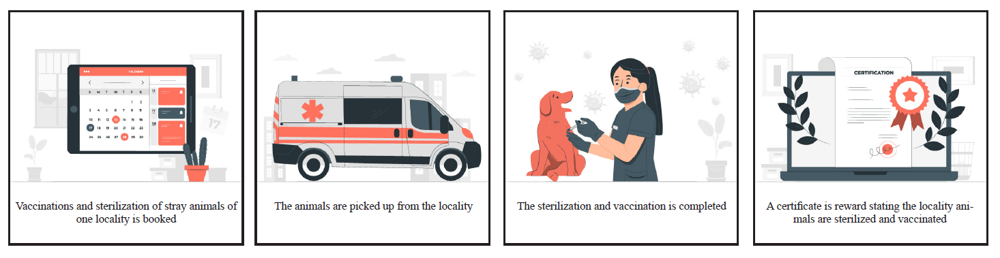
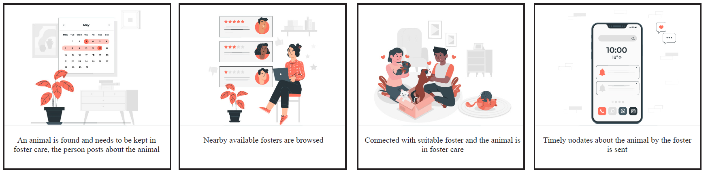
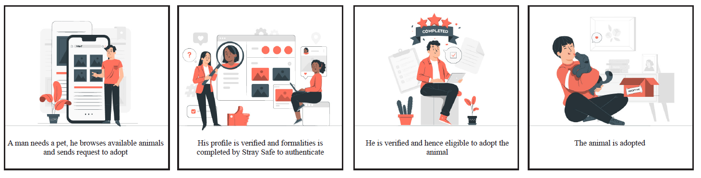
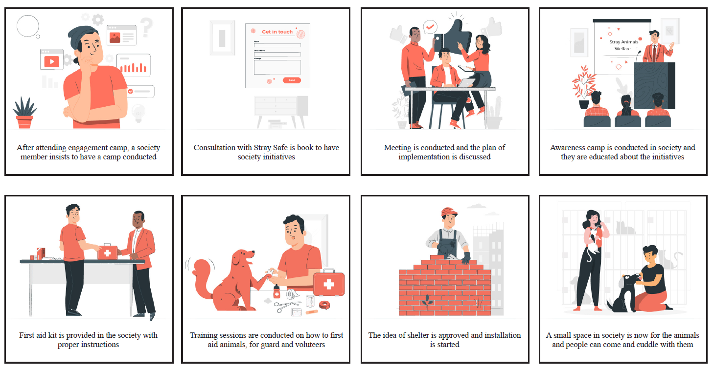

Designing a service for a beneficiary who can't be interviewed, observed, or consulted.
India has 80 million stray animals and a care ecosystem held together by individual volunteers and under-resourced NGOs. I spent 18 interviews and 6 site visits mapping where — and why — it fails, then designed a 6-level coordinated service system in response. This research was accepted and presented at ServDes'25, one of service design's leading academic conferences, hosted at IIT Hyderabad in October 2025.
A small moment. A big system.
This project started with a small, personal moment.
During the COVID-19 lockdown, I started feeding stray cats in my area. One cat in particular — hungry, waiting at the same spot every day — made something click.
What started as a simple act of care quickly exposed gaps in how stray animal support actually works.
I began noticing patterns:
- Injured animals with nowhere to go
- Volunteers trying to help, but overwhelmed
- NGOs existed, but were difficult to access
It didn't feel like a lack of effort. It felt like something else was missing.
That observation became the foundation for this project.
That personal observation is what sent me looking for the research — and there wasn't much of it.
The solution that took shape by the end wasn't a single service, but a layered system — the sections ahead trace how each level came together.
What everyone was measuring — and what no one was
Most existing research focused on population control — sterilization programs, trap-neuter-return, euthanasia practices. What was almost entirely absent was any understanding of the ecosystem as a whole.
Three specific gaps shaped my research direction:
Individual caregivers were invisible
Independent rescuers and feeders form the backbone of daily stray care in Indian cities. Their role, constraints, and behaviors were barely documented.
Western frameworks don't translate
Most studies drew from European or American contexts with formal animal control systems and high NGO density. India's ecosystem is informal, community-driven, and structurally different.
Formal animal control systems. High NGO density. Dense literature base.
Informal, community-driven ecosystem. Structurally different. Almost no research base.
"The Netherlands has zero stray animals. India has 80 million."
Nobody had mapped how the pieces connect
Existing studies addressed isolated touchpoints — a sterilization program here, a shelter model there. No one had asked how they connect, or where and why they fail to.
This shifted my research question from:
From "How do we improve services?" to "Why does the existing system fail — and where, exactly, does it break?"
Who speaks for the beneficiary?
Service design is conventionally human-centered. Every framework assumes the beneficiary can tell you something — through interviews, observations, co-design sessions. This project introduced a complication those frameworks don't fully account for.
Stray animals are the primary beneficiaries of the system — but they cannot communicate their needs, participate in research, or advocate for themselves. They experience the system's failures most directly, yet have no voice in how it's designed.
This is a problem existing animal-centered design literature had started to name, but rarely applied in practice: how do you design for someone you cannot design with?
My approach was to treat the people who interact with animals daily — feeders, rescuers, veterinarians, NGO workers — as human advocates for the animal's experience. They became my research participants, but every question I asked was oriented toward what the animal encounters, what the animal needs, and where the animal falls through the system, not just the human's own experience.
Applying this lens to a completely undocumented context — India's informal, fragmented stray care ecosystem — became the central contribution of the published paper.
Building on animal-centered design literature (Mancini, 2011; van der Linden, 2022)
"What happens when the primary beneficiary cannot speak for itself?"
— the central question, and the starting point for animal-centered service design
A qualitative, immersive approach
I designed a qualitative, immersive research approach — deliberately choosing depth over breadth.
Stakeholder Mapping
Before any fieldwork, I mapped the full stakeholder landscape — avoiding over-indexing on the most visible actors (NGOs) at the expense of the less visible but equally important ones: individual feeders, informal rescue groups, residential communities.


Semi-Structured Interviews — 18 participants
Divided into three groups:
Group 1 — Independent caregivers
Helping animals entirely on their own, with personal funds, without team or organizational support. High motivation. Zero infrastructure. Invisible to the wider system.
Group 2 — Informal rescue groups
Small, community-driven collectives juggling full-time jobs alongside running what were essentially micro-NGOs. No legal standing, no reliable infrastructure, no safety net.
Group 3 — NGO-affiliated workers
People who gave me the system-level view — how organizations make decisions, where resources go, what they can and cannot do.


NGO Site Visits — 5 organizations
At Feline Foundation, I conducted a week-long shadowing immersion — arriving each morning, observing how cases came in, how decisions were made, where formal processes broke down, and informal ones filled the gap.
This is where I learned that much of what makes an NGO actually function is invisible: the informal networks, the personal relationships, the workarounds built over years of under-resourcing.

Between them, these six NGOs cover almost every service an animal might need. But no single one offers continuity across the full journey — which is exactly where animals fall through.
One of the most significant research moments was entirely unplanned. This wasn't a planned research method — it happened by accident, and it taught me more than any interview had.
I found an injured kitten and tried to navigate the system to get it help. What followed was a firsthand experience of every breakdown I had been hearing about in interviews, compressed into a single afternoon:
- No clear information on which NGOs were nearby
- The closest NGO had closed — operational hours were over
- No ambulance service accessible
- No guidance on how to safely transport a distressed animal
- The vet diagnosed the kitten as needing ongoing care, but no foster placement was available
The kitten survived. But the experience made viscerally clear what interviews could only describe: the system doesn't just have gaps. For someone navigating it alone in an emergency, it is effectively inaccessible.

Eighteen interviews. Five site visits. Weeks of synthesis. These four insights shaped everything that followed.
I started by mapping the full care journey — tracing every touchpoint from the moment someone discovers an injured animal to what (rarely) comes after: recovery, fostering, adoption. The map made the failure points impossible to ignore.
Mapping the Care Journey

This shows a condensed view — click the image to explore the full journey map on Miro

Four key insights
Every individual service — feeding, rescue, medical treatment, fostering — often functions adequately on its own. The failure is structural: the handoffs between services are unmapped, unsupported, and where animals most consistently fall through. No one owns the gap between rescue and treatment. No one coordinates the move from treatment to fostering.
The StraySafe system is built around transitions, not individual services. Each of the 6 levels is explicitly designed to connect to the next, with coordination infrastructure at every handoff point.
Across every interview, I found people actively contributing — feeders, rescuers, veterinarians, NGO workers — often at personal cost. The failure is not motivational. Effort exists. The infrastructure to connect that effort does not. People are doing the work in parallel, not together.
Rather than creating new services, the system creates a coordination layer — a shared infrastructure that makes existing care efforts visible and connectable to each other.
Many people want to help but don't know how. The system is not only fragmented — it is illegible to anyone trying to enter it. There is no clear door in. When people can't find one, they don't knock anyway. The cost of confusion is lost participation.
Level 1 (Awareness & Community Building) is designed as an explicit entry point — a legible first step that turns confused bystanders into participants with a clear path forward.
The most significant research realization was that the problem wasn't absence — it was disconnection. The ecosystem already has feeders, rescuers, NGOs, vets, and willing residents. What it lacks is the connective tissue between them. This completely changed what the solution needed to be.
StraySafe is not a product. It is a system. The six levels are not independent services — they are a layered architecture where each level depends on and feeds into the next.
A layered service system
Stray Safe is not a single product or service. It is a system designed to connect the existing ecosystem — enabling different stakeholders to participate at different levels while keeping all efforts coordinated.
Awareness & Community Building
Gap addressed: navigabilityEngagement camps at schools, colleges, and corporate offices. The door into the system for people who don't know where to start.

Mobile Vet Clinic
Gap addressed: emergency medical accessOn-call mobile veterinary clinic, bookable via phone or app, with real-time location tracking. The clinic comes to the animal.

Sterilization & Vaccination
Gap addressed: population managementNeighbourhood-based model where feeders and residents coordinate with NGOs to identify, book, and track unsterilized animals in their area.

Foster Network
Gap addressed: treatment-to-recovery transitionA structured network connecting rescued animals with registered foster caregivers nearby. Directly addresses the gap the bodystorming experience made personal: after treatment, there is nowhere for an animal to go.

Adoption Platform
Gap addressed: long-term outcomesA centralized platform pooling listings from NGOs, rescue groups, and independent caregivers. Make adopting a stray the path of least resistance.

Society Initiatives
Gap addressed: community-level integrationFor residential communities willing to move from resistance to participation. Addresses the resistant resident — not by arguing against his concerns, but by giving him a structured, supported way to participate.

Testing before finalizing
Six levels looked good on paper. Before finalizing anything, I needed to know if people would actually use them.
I tested the concept with 20 participants across two age groups (22–25 and 40+), using three formats — in-person sessions, Zoom calls, and written feedback — to see if the response held up regardless of how people engaged with it.
The Mobile Vet Clinic was the clear winner — even participants who weren't particularly fond of animals supported it, because it removed the hardest part: physically transporting an injured stray. Awareness camps also landed well, including with residents who'd been resistant to feeding strays in their communities — the gap wasn't willingness, it was information.
I'd originally proposed a first-aid component where community members would administer basic care themselves. Most participants rejected this — handling an injured, unfamiliar animal felt risky and uncomfortable, even to people who wanted to help. The fix wasn't to drop the idea, but to shift it: supervise and support, rather than personally administer.
The foster network was liked in concept but confusing in practice — participants understood why it mattered but couldn't picture how it would actually connect them to a foster. That confusion is exactly what shaped the next step: turning the loosest, most conceptual level into something concrete enough to actually use.
Testing surfaced a pattern — coordination, not intention, was the recurring failure point. That insight shaped the final wireframes: a single website tying all six levels together, so "how do I actually do this" had one clear answer.
The final touchpoint
Testing made one thing clear: people needed a single, tangible way in — not six separate services to figure out individually. I designed a website as that connective layer, where someone could learn about a service, understand why it matters, and access it, all in one place.
Final wireframes — shaped directly by what concept testing revealed
From thesis to published research

This project became more than a thesis.
The research was developed into a peer-reviewed paper: "Animal-Centered Service Design for Stray Animals in India" — accepted and presented at ServDes'25, the International Service Design Conference hosted at IIT Hyderabad in October 2025.
The paper makes a specific theoretical contribution. Service design literature has long assumed a human beneficiary — someone who can be interviewed, observed, included. This research challenges that assumption and proposes a different operating mode: designing through proxy representation, with non-human beneficiaries at the centre of inquiry.
It introduces the concept of animal-centered service design — not as a fully formed framework, but as a provocation and starting point for a design approach the field has not yet formalized. The goal is to open a conversation, not close one.
Beyond the theoretical contribution, the practical implication matters too: India has approximately 80 million stray animals. The stray care ecosystem is under-resourced, fragmented, and almost entirely unmapped in design research. This work begins to change that.
What this project taught me
This project changed how I think about research problems.
I came in expecting to find missing services. What I found instead was a system that had most of its parts — but none of its connections. That distinction between absence and disconnection became the most important realization of the project. It completely changed what the solution needed to be.
The bodystorming moment of finding that kitten — navigating the broken system alone in real time — gave me something no amount of interviews could have. The most important research insights in this project came from the moments I didn't plan for. That's something I carry into every project now.
Build prototypes earlier and get them into real stakeholder hands faster. Storyboards communicate ideas but don't surface operational friction.
Partner with two or three Mumbai NGOs to pilot the care coordination layer — specifically the mobile clinic integration and the foster network. These are the highest-impact and highest-friction points in the ecosystem.